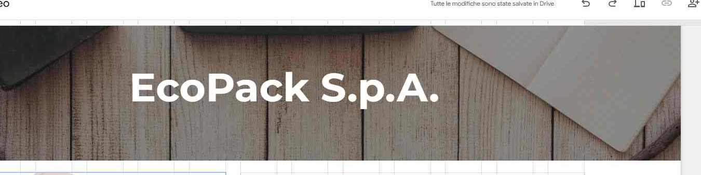
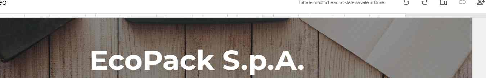
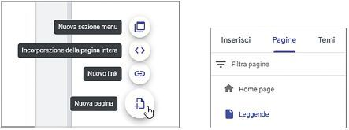
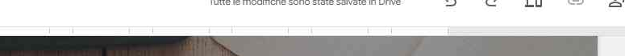
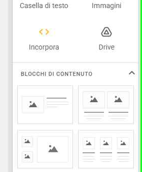
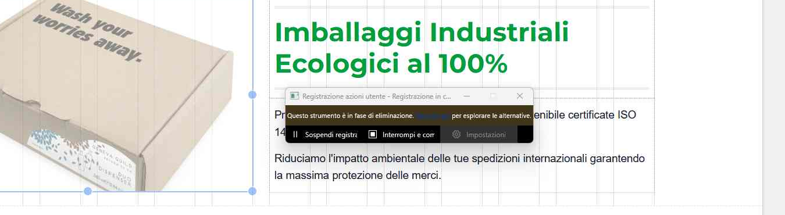
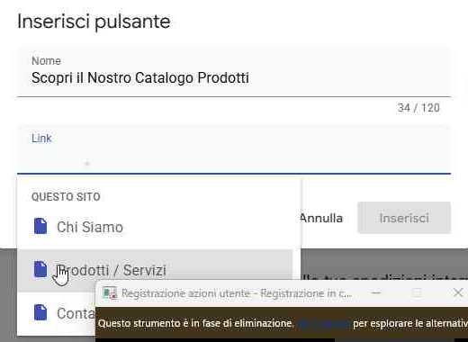
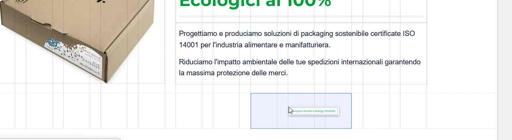
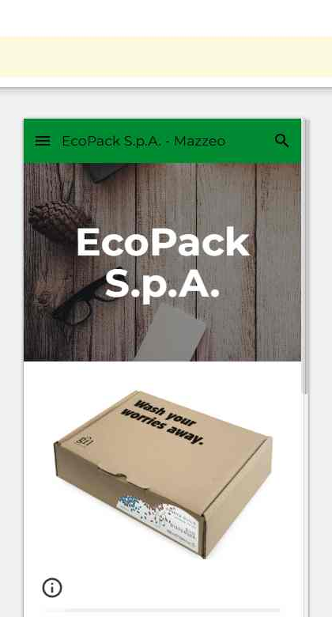

Laboratorio Pratico al PC
Durata: 60 Minuti
Classi AFM & RIM
Laboratorio 1: Progetta il Tuo Sito Aziendale su Google Sites
Guida operativa passo-passo con tutte le figure del libro di testo (Cap. 4, pag. 200–205) per realizzare il portale aziendale ufficiale a 4 pagine di EcoPack S.p.A. (Packaging Sostenibile per l'Industria & l'Export), applicando le regole di alberatura logica, copywriting B2B e responsive design.
🏢 Caso Studio Assegnato: EcoPack S.p.A.
Packaging Ecologico B2B
In questo laboratorio lavoreremo sull'impresa industriale di riferimento, EcoPack S.p.A.: svilupperai individualmente alla tua postazione il tuo sito web, concentrandoti passo dopo passo sulla padronanza tecnica di Google Sites e sull'applicazione pratica delle strategie di marketing aziendale:
Settore & Mercato
Packaging B2B per Export
Fornitura di imballaggi industriali per aziende alimentari e manifatturiere europee.
Proposta di Valore (Home)
Imballaggi Ecologici al 100%
Slogan chiaro: "Proteggiamo le tue merci, rispettiamo il pianeta". Regola dei 5 secondi.
Reputazione & Certificazioni
ISO 14001 • 20 Anni Export
Elementi chiave per generare fiducia nei clienti B2B e negli importatori esteri.
3 Prodotti Chiave (Catalogo)
EcoBox, BioWrap, Nastro Kraft
Scatole in cartone ondulato riciclato, film biodegradabile e nastri termosaldabili.
1
Cap. 4, pag. 200 • Step 1–3
Accesso a Google Sites & Creazione Sito Vuoto
1
Apri una nuova scheda del browser e vai su sites.google.com.
2
Verifica Account: controlla in alto a destra che l'icona appartenga al tuo account scolastico Google Workspace.
3
Sotto la voce Crea un nuovo sito, clicca sul riquadro col grande pulsante "+" colorato (Vuoto), come illustrato nella Figura 1.
4
Assegna la denominazione ufficiale dell'azienda in due posizioni distinte (come illustrato nella Figura 2):
Nome File Drive (in alto a sinistra):
EcoPack S.p.A. - [Tuo Cognome]
Titolo Banner Intestazione (nella Home):
EcoPack S.p.A.
✓ Checklist Autovalutazione Step 1
📖 FIGURA 1 • PAGINA 200 (STEP 2)
CREA UN NUOVO SITO (+)

Dal Libro: Dopo l'accesso col proprio account scolastico, clicchiamo sul riquadro contrassegnato dal "+" colorato (Sito vuoto).
📸 PROGETTO ECOPACK • RISULTATO REALE
TITOLO FILE DRIVE & BANNER HOME

Nostro Risultato: Inseriamo EcoPack S.p.A. - [Tuo Cognome] in alto a sinistra come nome file Drive e EcoPack S.p.A. nell'intestazione principale.
2
Cap. 4, pag. 201 • Scheda Temi
Scelta del Tema Visivo & Palette Sostenibile
1
Nel pannello laterale destro dell'editor, individua le 3 schede principali: Inserisci, Pagine e Temi (come mostrato nella Figura 3).
2
Clicca sulla terza scheda: Temi 🎨. Scorri tra i temi predefiniti e seleziona Vision (Visione) oppure Aristotle (Aristotele), ideali per comunicare serietà e modernità aziendale B2B.
3
Palette Verde Sostenibile: sotto al nome del tema, clicca sul cerchietto colore Verde / Smeraldo.
💡 Perché il verde? EcoPack produce packaging sostenibile: il colore verde trasmette istantaneamente rispetto dell'ambiente, affidabilità e conformità ESG nei mercati internazionali.
✓ Checklist Autovalutazione Step 2
📸 PROGETTO ECOPACK • RISULTATO REALE
TEMA VISION CON ACCENTO VERDE SMERALDO

Nostro Risultato: L'applicazione del tema Vision aggiunge automaticamente l'accento color verde smeraldo coordinato sotto al titolo e alla barra di navigazione.
Tema Selezionato: Visione (Vision)
Attivo
Palette Brand Identity Ecologica:
✓ Il colore verde selezionato coordinerà automaticamente pulsanti, accenti e titoli di tutte le 4 pagine del sito.
3
Cap. 4, pag. 201–202 • Step 5–7 & 9
Costruzione dell'Alberatura Canonica a 4 Pagine
1
Nel pannello laterale destro, clicca sulla scheda centrale Pagine 📄. Inizialmente troverai la sola pagina Home.
2
In basso a destra, posiziona il cursore sul pulsante circolare "+" e clicca sull'opzione Nuova pagina (icona foglio con il "+", illustrata nella Figura 6).
3
Nella finestra popup che si apre (illustrata nella Figura 9), digita il nome della pagina e premi Fine. Crea in sequenza le 3 pagine:
Chi Siamo
Prodotti / Servizi
Contatti & Sede
4
Verifica Menu Automatico: come illustrato nella Figura 7, le nuove pagine compaiono nell'elenco laterale e Google Sites aggiorna istantaneamente la barra di navigazione in alto a destra su tutte le pagine!
✓ Checklist Autovalutazione Step 3
📖 FIGURA 6 • PAGINA 201 (STEP 6)
PULSANTE "+" NUOVA PAGINA

Dal Libro: Nella scheda Pagine a destra posizioniamo il mouse sul pulsante circolare "+" in basso e selezioniamo Nuova pagina.
📸 PROGETTO ECOPACK • RISULTATO REALE
BARRA DI NAVIGAZIONE AUTOMATICA

Nostro Risultato: Man mano che creiamo le 4 pagine nell'elenco, Google Sites genera istantaneamente il menu di navigazione in alto a destra su tutte le pagine!
4
Cap. 4, pag. 201–203 • Step 4, 5, 8 & 11
Home Page: Blocchi di Layout, Copywriting & Immagine
1
Torna sulla pagina Home cliccando sul suo nome nel menu o nella scheda Pagine.
2
Nel pannello laterale destro, apri la scheda Inserisci. Sotto la voce Blocchi di contenuto (illustrata nella Figura 4), clicca sul primo layout (riquadro immagine a sinistra + titolo e testo a destra).
3
Compila i campi di testo del blocco (come illustrato nelle Figure 5 e 8):
Titolo della Proposta di Valore:
Imballaggi Industriali Ecologici al 100%
Testo Descrittivo Commerciale B2B:
Progettiamo e produciamo soluzioni di packaging sostenibile certificate ISO 14001 per l'industria alimentare e manifatturiera. Riduciamo l'impatto ambientale delle tue spedizioni internazionali garantendo la massima protezione delle merci.
4
Inserisci e Ridimensiona l'Immagine: clicca sul riquadro immagine col "+" e scegli Seleziona immagine (cerca: "cartone riciclato" o "sustainable packaging"). Come mostrato nelle Figure 12, 13 e 14, puoi ridimensionare la foto agendo sui pallini rotondi blu ai vertici per adattarla perfettamente alla colonna.
✓ Checklist Autovalutazione Step 4
📖 STRUMENTI • SCHEDA INSERISCI
BLOCCHI DI CONTENUTO PREDEFINITI

Dal Pannello Laterale: Selezioniamo il primo layout (immagine a sinistra + titolo e testo a destra) per strutturare la Home in maniera ordinata e responsive.
📸 PROGETTO ECOPACK • RISULTATO REALE
BLOCCO HOME: FOTO PACKAGING & TESTO B2B

Nostro Risultato: Foto del packaging ecologico a sinistra, titolo verde ad alto impatto e proposta di valore commerciale B2B allineata a destra.
5
Cap. 4, pag. 202–204 • Step 10 & 12–14
Pulsante d'Azione (Link Interno) & Test Mobile
1
Nella scheda Inserisci a destra, scorri verso il basso e seleziona lo strumento Pulsante (illustrato nella Figura 15).
2
Nella finestra Inserisci pulsante che appare (illustrata nella Figura 16):
- Nome: digita
Scopri il Nostro Catalogo Prodotti - Link: clicca sul campo e seleziona la pagina interna "Prodotti / Servizi" dalla tendina automatica (illustrata nella Figura 11)!
- Premi Inserisci.
3
Trascina il pulsante appena creato direttamente sotto al testo descrittivo della Home (come illustrato nella Figura 17) per ottenere una Call-to-Action chiara.
4
Collaudo Responsive Mobile: nella barra grigia superiore, clicca sull'icona dell'Anteprima 👁️ (schermo del computer). In basso a destra della schermata, clicca sull'icona dello Smartphone 📱:
Verifica che il sito sia perfettamente leggibile senza zoom, che il layout sia fluido e che la barra di navigazione si trasformi nel comodo menu ad "hamburger".
✓ Checklist Autovalutazione Step 5
📸 PROGETTO ECOPACK • RISULTATO REALE
FINESTRA PULSANTE & COLLEGAMENTO INTERNO

Nostro Risultato: Digitiamo il nome del pulsante e apriamo il menu Link: Google Sites elenca in automatico tutte le pagine del nostro sito. Selezioniamo Prodotti / Servizi.
📸 PROGETTO ECOPACK • RISULTATO REALE
CALL-TO-ACTION AGGANCIATA ALLA GRIGLIA

Nostro Risultato: Trasciniamo il pulsante verde con il mouse sotto al testo commerciale. Il pulsante si aggancia perfettamente alle guide verticali della griglia.
Metodo Ufficiale di Consegna Didattica
📬 Come Consegnare su Google Classroom (Metodo A: Google Drive)
TEMPO RICHIESTO: 10 SECONDI • ZERO RISCHI DI PERMESSI BLOCCATI
💡 Perché consegniamo da Google Drive? Google Sites salva automaticamente ogni bozza all'interno del tuo Google Drive istituzionale. Consegnando il file nativo direttamente da Drive, Google Classroom assegna in automatico tutti i permessi di lettura al docente: non c'è bisogno di pubblicare il sito e non si rischia di inviare link errati o bloccati!
1
Apri il Compito
Accedi a Google Classroom con l'account della scuola e apri il compito "Laboratorio 1: Google Sites EcoPack".
2
+ Aggiungi o crea
Nel riquadro Il tuo lavoro in alto a destra, clicca sul pulsante + Aggiungi o crea e seleziona Google Drive 📁.
3
Seleziona da Recenti
Nella scheda Recenti, clicca sul file con l'icona blu di Google Sites denominato
EcoPack S.p.A. - [Tuo Cognome] e premi Aggiungi.
4
Premi Consegna!
Verifica che il file sia visibile nel riquadro, quindi clicca sul pulsante grande blu Consegna e conferma. Lavoro completato!
Approfondimento Opzionale • Pag. 205
🔍 Come Funziona la Pubblicazione sul Web & Collaudo Anteprima
Clicca per espandere
▼
📸 ANTEPRIMA COMPUTER • MODALITÀ DESKTOP
SITO COMPLETO ECOPACK S.P.A.

Modalità Anteprima Desktop: Mostra esattamente come appare il sito aziendale su uno schermo grande di un computer o portatile, con menu orizzontale e pulsante CTA in evidenza.
📱 COLLAUDO RESPONSIVE • MODALITÀ SMARTPHONE
MENU HAMBURGER & LAYOUT MOBILE

Collaudo Mobile: Cliccando sull'icona dello Smartphone in basso a destra, verifichiamo la fruibilità sui telefoni: le colonne si incolonnano ordinatamente e la navbar diventa un menu compatto.
📖 FIGURA 19 • PAGINA 205
FINESTRA "PUBBLICA SUL WEB"

Dal Libro: Scegliamo l'indirizzo web pubblico del sito (es. ecopack-cognome) e controlliamo le impostazioni di visibilità prima di premere il pulsante blu Pubblica.
🛡️ Strumento di Controllo: Vuoi comunque verificare il tuo Link?
Anti-Errore /edit
Se decidi di pubblicare il sito e condividere il link pubblico, incollalo qui per verificare che non sia l'indirizzo di modifica bozza: